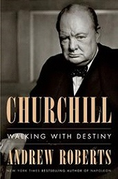

Larry's articles were usually voluminous, and this one is no exception. They also had a tendency of being slightly unpolished, lacking consistency, which then prompted interventions from the editor, usually me. Amazingly I never had to justify any of my edits. Larry considered his work done once he had turned in his copy and trusted the editors to do an honest job. As this was his (almost) final submission, I considered for a while to publish it as it was, without any editing. After all, I could no longer ask for his opinion. But then I told myself that he would approve it anyway. And that, when I met him shortly before his death, he had assured me that he considered me to be one of the best editors he'd ever met. So once again I set myself to the task. Because I know there's at least one person who'd appreciate it. I won't tell you the cuts I've made, but anything added by me is duly marked by (dh), which veteran readers will recognize as the initials of Domus Huys, my alter ego.
INTRO
2018 was not a great year for the publishers, authors or the kind of readers who like the kind of books I do. Still, if you dug through enough dirt you could find the occasional diamond in the rough or a real gem. I’ve got a baker’s dozen examples for you.
Why do authors and readers keep going back to the same old subjects (people, places, events)…? The answer is simple: because we are churning out authors and readers faster than we are creating new people, places and events to write about.
“If this is a subject that you are passionate about; then this is a book that belongs on your book shelf.” So obvious, but so true. I remember discussing this with some French Dippers and one of them mentioned that the average Frenchman owns 90 books, the average literate Frenchman owns 300, and the younger generation just has an internet link to Wiki, Google, FB and Flickr --- it’s all they think they need.
The Best History Books of 2018: Can we mine the past for clues that explain the present? That's the central theme of many history books in 2018, as writers and historians, academic and popular alike, attempt to uncover and recount the stories that say something about the state of the world today. But what about tomorrow? After all, isn’t history nothing more than premature futurology?
The increased popularity of historical fiction a/k/a alternative realities a/k/a “The what ifs…” is due to one fact: it is easier to write a work of historical fiction than a real history book.
Here’s the way Wiki tells the story:
“If the South Had Won the Civil War is a 1961 alternate history book by MacKinlay Kantor, a writer who also wrote several novels about the American Civil War as it actually happened. It was originally published in the November 22, 1960, issue of Look magazine. It generated such a response that it was published in 1961 as a book.
The book is written in the manner of a history text published in the alternate reality of 1961 and describing the developments of the past century, in which the Confederate States of America had existed as a separate nation-state. It includes numerous footnotes and quotations from various (fictional) historical writings.
The book had a considerable influence on the development of the subgenre of American Civil War alternate histories, one of the two most frequent subjects of American alternate history. Later writers of such books, such as Harry Turtledove, explicitly stated Kantor's influence on their own work.”
I know. I read the article, played the game, bought the book and was hooked for life. Apparently I wasn’t the only one. The fans of Kantor’s book quickly discovered James Dunnigan’s 1958 game “Gettysburg” and brought the Civil War and board gaming to a whole new generation.
The decline of science fiction’s influence on Diplomacy: The passing of Comic Con co-founder Lou Curtiss, and Jerry Pournelle, reminds me to remind you that a lot of early Dippers were sci-fi, chess and other board game fans long before Dip came along.
The Other Great War: Cambridge vs. Harvard Universities and their Presses doesn’t get the publicity of some other wars but in its own way it is just as important and, in the long term, perhaps more so. After all, these two are duking it out not only over what history books will be published but in what language. The quality of content, expertise of authors, physical size, financial cost and Cambridge or Harvard imprint practically guarantees a book on WWI will become a best seller and a highly reviewed work.
Amazon’s “Look Inside!” feature, a preview of some of the book’s contents: If you don’t use it already get in the habit. It can save you buying a book that won’t hold your interest or teach you something new. This is an easy way to keep up with new books or new editions of old books as they appear.
The Death and Resurrection of John Le Carré (1 new novel, 2 new reviews after years of silence) came as a shock to many who thought he’d died. In 2017 he published his first George Smiley book in 27 years “A Legacy of Spies”. Now comes word that next year he will be publishing his 25th book, “Agent Running in the Field” at age 87. John le Carré is back... His next novel will be out in 2019. “Agent Running in the Field” will feature a 26-year-old character. It is not George Smiley.
I’m also eagerly waiting for Seymour Hersh’s forthcoming book on Dick Cheney.
A new book about Mussolini is taking Italy by storm. Not everyone is pleased. We report from Rome.
THE BOOK SHELF
In case you were wondering where to find some of the books I’ve mentioned and you happen to remember where your local library is. Do you even have a valid library card? When was the last time you used it? When I was a kid having one was a kind of mile stone on the rite of passage than led to a driver’s license.
THE TIMES…
-
The Silk Roads, History, The World (c. 207 B.C. – c. 1720s A.D.)
-
Lost Kingdom, History, Russia (1470 – Today)
-
Imperial Twilight, History, China, Opium Wars (1839 – 1842, 1856 – 1860)
-
Russia’s Turn to Persia, History, Russia, Persia (1883 – 1990s)
-
The Escape Artists, History, WWI (23 July, 1918)
-
Lords of the Desert, History, Britain, the Middle East (1945 – 1967)
-
War on Peace, Current Affairs, (9/11/2001 - )
-
The Spy and the Traitor, History, Espionage, Soviet Union, Oleg Gordievsky (1938 - ) (active c. 1968 – 1985)
…OF THEIR LIVES.
-
Churchill, Bio, Memoir (1874 – 1965)
-
The Accidental President, Bio, Memoir, Harry S. Truman (1884 – 1972)
-
De Gaulle, Bio, Memoir (1890 – 1970)
-
Reporter, Bio, Memoir, Seymour Hersh (1937 - ) (Lithuanian/Polish/American)
-
M. Il figlio del secola, Bio, Memoir, Mussolini (1883 – 1945)
Note: Click on any book cover below to get you to Amazon, then again to look inside. (dh)
THE TIMES…
|
|
By Peter Frankopan
Selected for Amazon’s Best of 2018 List
“Far more than a history of the Silk Roads, this book is truly a revelatory new history of the world, promising to destabilize notions of where we come from and where we are headed next. From the Middle East and its political instability to China and its economic rise, the vast region stretching eastward from the Balkans across the steppe and South Asia has been thrust into the global spotlight in recent years. Frankopan teaches us that to understand what is at stake for the cities and nations built on these intricate trade routes, we must first understand their astounding pasts.
Frankopan realigns our understanding of the world, pointing us eastward. It was on the Silk Roads that East and West first encountered each other through trade and conquest, leading to the spread of ideas, cultures and religions. From the rise and fall of empires to the spread of Buddhism and the advent of Christianity and Islam, right up to the great wars of the twentieth century—this book shows how the fate of the West has always been inextricably linked to the East.” (from the publisher)
All societies write world history with their own region or civilization at the center. This is no different in Asia or Africa, than it is in Europe, America or the Pacific. Things get more interesting when an outsider decides to write history from the perspective of a region that is not his own. Not just the history of that region, but world history. This often leads to accusations of cultural appropriation and promotion of misconceptions, like this critique in a British newspaper:
“The need for brevity has led to some troubling misrepresentations. Although Frankopan makes the important point that the prophet Muhammad made allies of the Arab Jews, he omits to mention the number of Jews who were killed by Muslims soon after. There is no such place as the “Arab-speaking world”. The Crusaders never did manage to take Aleppo, although they desperately wanted to. And it is unfortunate, in this post-colonial era, to write that TE Lawrence took Aqaba in 1917 without mentioning the Arab forces who did the fighting – not even Lawrence’s most slavish fans would claim that for him.”
The Silk Roads by Peter Frankopan review - a frustrating trail
And yet there is a compelling argument for producing these kinds of books. Sure, the same book written by or translated from a Persian writer would be more authentic. But it might also be much harder to understand, because of assumptions of familiarity of the reader with the traditions and cultural habits of the region and its inhabitants. Reading a James Clavel novel such as "Shogun" about feudal Japan, you will be drawn into the story as much by the storytelling as by the mystery of a time and place far removed from your own experience. You will not question the author's credibility, but find comfort in the fact that the author comes from the same cultural tradition as you do. The reader matters, as much in fiction as in non-fiction. (dh)
|
Lost Kingdom: The Quest for Empire and the Making of the Russian Nation from 1470 to the Present
|
|
By Serhii Plokhy
From a preeminent scholar of Eastern Europe, a new history of Russian imperialism
“In 2014, Russia annexed the Crimea and attempted to seize a portion of Ukraine. While the world watched in outrage, this blatant violation of national sovereignty was only the latest iteration of a centuries-long effort to expand Russian boundaries and create a pan-Russian nation.
In Lost Kingdom, award-winning Ukrainian historian and Harvard Professor Serhii Plokhy argues that we can only understand the confluence of Russian imperialism and nationalism today by delving into the nation's history. Spanning over 500 years, from the end of the Mongol rule to the present day, Plokhy shows how leaders from Ivan the Terrible to Joseph Stalin to Vladimir Putin exploited existing forms of identity, warfare, and territorial expansion to achieve imperial supremacy.
An authoritative and masterful account of Russian nationalism, Lost Kingdom chronicles the story behind Russia's belligerent empire-building quest.” (from the publisher)
Lots of good maps. (Note, focus on times and lives but spaces are also important in this collection.)
I just spent a lot of time watching the current spat between the Ukraine and Russia over the Kerch Strait and Plokhy’s book helped make sense of what is going on there. It reminded me that what is going on in that area today is nothing new. It goes all the way back to the founding Prince Vladimir. The current Prince Vlad of the Kremlin is just following in his footsteps. Even the idea of using a bridge as a blockade tool is straight out of The Chronicles.
|
Imperial Twilight: The Opium War and the End of China’s Last Golden Age
|
|
By Stephen R. Platt
As China reclaims its position as a world power, Imperial Twilight looks back to tell the story of the country's last age of ascendance and how it came to an end in the nineteenth-century Opium War.
“When Britain launched its first war on China in 1839, pushed into hostilities by profiteering drug merchants and free-trade interests, it sealed the fate of what had long been seen as the most prosperous and powerful empire in Asia, if not the world. But internal problems of corruption, popular unrest, and dwindling finances had weakened China far more than was commonly understood, and the war would help set in motion the eventual fall of the Qing dynasty--which, in turn, would lead to the rise of nationalism and communism in the twentieth century. As one of the most potent turning points in the country's modern history, the Opium War has since come to stand for everything that today's China seeks to put behind it.
In this dramatic, epic story, award-winning historian Stephen Platt sheds new light on the early attempts by Western traders and missionaries to "open" China--traveling mostly in secret beyond Canton, the single port where they were allowed--even as China's imperial rulers were struggling to manage their country's decline and Confucian scholars grappled with how to use foreign trade to China's advantage. The book paints an enduring portrait of an immensely profitable--and mostly peaceful--meeting of civilizations at Canton over the long term that was destined to be shattered by one of the most shockingly unjust wars in the annals of imperial history. Brimming with a fascinating cast of British, Chinese, and American individuals, this riveting narrative of relations between China and the West has important implications for today's uncertain and ever-changing political climate.” (from the publisher)
Here is a typical example of a UK media review of the book. Note the very different approach.
“In the closing decades of the 18th century, Qing China was among the richest and most powerful empires in the world. Over the ensuing decades, economic, ecological and imperial overextension mired the dynasty in political dysfunction and domestic disorder. In the lively pages of Platt’s book, we encounter the desperate millenarian rebels and pirates who plunged into a hopeless civil war because the depredations of corrupt officials left them no choice. Against the backdrop of mounting chaos the Qing government unsurprisingly – but with dwindling success – sought to exert control over its borders by restricting European and American trade to the southern port of Canton.”
Imperial Twilight by Stephen R Platt review – lessons for today from the opium war
One thing I’ve noticed in my studies of Chinese history: the Chinese do not forget a wrong, no matter or minor or how major; and they will get revenge for it. Keep that in mind when you think about the Opium Wars and the illegal drug war now going on between China and the USA over China’s manufacturing and sale of illegal drugs to the USA. Just change the word Opium to Fentanyl.
|
|
|
By Denis V. Volkov
“There are relatively few detailed studies of the impact of Russian imperialism on the Middle East, a consequence no doubt of the paucity both of scholars fluent in Russian and the limited accessibility to the Russian archives: that brief window of opportunity in the 1990s has long since closed. Denis Volkov’s Russia’s Turn to Persia: Orientalism in Diplomacy and Intelligence (Cambridge) is by no means an easy read and, as the product of a doctoral thesis, it retains much of the scholarly apparatus that many readers will find frustrating to navigate. But it fills a major gap in our knowledge and shows emphatically the tight relationship between knowledge and power in Tsarist Russia and the Soviet Union.” (from the publisher)
A modern example of classic Cambridge scholarship at its best.
The Russians’ propensity for lying to themselves and then getting upset when others don’t believe them is a bafflement to everyone but the Germans. And yet the amazing thing is that the record of the truth does exist deep in the archives of the Kremlin, the Party, the KGB, etc. going back to the days of the Empire. It’s just that only a very few people have ever been able to access it, let alone write about it or talk about it.
|
The Escape Artists: A Band of Daredevil Pilots and the Greatest Prison Break of the Great War
|
|
By Neal Bascomb
“Neal Bascomb, New York Times best-selling author, delivers the spellbinding story of the downed Allied airmen who masterminded the remarkably courageous—and ingenious—breakout from Germany’s most devilish POW camp
In the winter trenches and flak-filled skies of World War I, soldiers and pilots alike might avoid death, only to find themselves imprisoned in Germany’s archipelago of POW camps, often in abominable conditions. The most infamous was Holzminden, a land-locked Alcatraz of sorts that housed the most troublesome, escape-prone prisoners. Its commandant was a boorish, hate-filled tyrant named Karl Niemeyer who swore that none should ever leave.
Desperate to break out of “Hellminden” and return to the fight, a group of Allied prisoners led by ace pilot (and former Army sapper) David Gray hatch an elaborate escape plan. Their plot demands a risky feat of engineering as well as a bevy of disguises, forged documents, fake walls, and steely resolve. Once beyond the watch towers and round-the-clock patrols, Gray and almost a dozen of his half-starved fellow prisoners must then make a heroic 150 mile dash through enemy-occupied territory towards free Holland.
Drawing on never-before-seen memoirs and letters, Neal Bascomb brings this narrative to cinematic life, amid the twilight of the British Empire and the darkest, most savage hours of the fight against Germany. At turns tragic, funny, inspirational, and nail-biting suspenseful, this is the little-known story of the biggest POW breakout of the Great War.” (from the publisher)
Whether you grew up with Billy Wilder’s 1953 Stalag 17, 1955’s The Colditz Story or the 1963 Great Escape this is a story you might not be familiar with.
From Wikipedia:
“Although now surrounded by suburban development, the two main barrack blocks of the camp survive, and are still in military use as barracks for the German Army. The only obvious differences are the presence of solar panels and satellite dishes on the roofs.”
Note the German propensity for not wasting old buildings that can still be used for a more contemporary need. The railroad tunnel that became West German’s “Greenbrier Bunker” during the Cold War and today is a combination museum/tourist attraction and archives storage facility (again, like the Greenbrier) is one example. The old Saxon barracks turned into a WWI prisoner-of-war camp is once again a base, this time for the German army. Perhaps the biggest and certainly most expensive redevelopment project is in the old Tier Garden area of Berlin that was the heart of Hitler’s Third Reich. Today it is being filled in with a redone Parliament, a new Chancery, a new headquarters for the German intelligence services and, perhaps most amazingly, a totally reconstructed palace of the Prussian kings.
|
Lords of the Desert: The Battle Between the United States and Great Britain for Supremacy in the Modern Middle East
|
|
By James Barr
Book of the Year for New Statesman, History Today, Times Literary Supplement and BBC History Magazine a.o.
A path-breaking history of how the United States superseded Great Britain as the preeminent power in the Middle East, with urgent lessons for the present day.
“We usually assume that Arab nationalism brought about the end of the British Empire in the Middle East--that Gamal Abdel Nasser and other Arab leaders led popular uprisings against colonial rule that forced the overstretched British from the region.
In Lords of the Desert, historian James Barr draws on newly declassified archives to argue instead that the US was the driving force behind the British exit. Though the two nations were allies, they found themselves at odds over just about every question, from who owned Saudi Arabia's oil to who should control the Suez Canal. Encouraging and exploiting widespread opposition to the British, the US intrigued its way to power--ultimately becoming as resented as the British had been. As Barr shows, it is impossible to understand the region today without first grappling with this little-known prehistory.”
“Upon victory in 1945, Britain still dominated the Middle East. She directly ruled Palestine and Aden, was the kingmaker in Iran, the power behind the thrones of Egypt, Iraq and Jordan, and protected the sultan of Oman and the Gulf sheikhs. But her motives for wanting to dominate this crossroads between Europe, Asia and Africa were changing. Where ‘imperial security’ – control of the route to India – had once been paramount, now oil was an increasingly important factor. So, too, was prestige. Ironically, the very end of empire made control of the Middle East precious in itself: on it hung Britain’s claim to be a great power.
Unable to withstand Arab and Jewish nationalism, within a generation the British were gone. But that is not the full story. What ultimately sped Britain on her way was the uncompromising attitude of the United States, which was determined to displace the British in the Middle East.
The British did not give in gracefully to this onslaught. Using newly declassified records and long-forgotten memoirs, including the diaries of a key British spy, James Barr tears up the conventional interpretation of this era in the Middle East, vividly portraying the tensions between London and Washington, and shedding an uncompromising light on the murkier activities of a generation of American and British diehards in the region, from the battle of El Alamein in 1942 to Britain’s abandonment of Aden in 1967. Reminding us that the Middle East has always served as the arena for great power conflict, this is the tale of an internecine struggle in which Britain would discover that her most formidable rival was the ally she had assumed would be her closest friend.” (from the publisher)
In my opinion much more important was the 1956 Arab-Israeli War over the Suez Canal when Eisenhower forced the British, French and Israelis to abandon their attack and the devolution of the huge network of correspondents across the Mediterranean, Near East and Middle East that the UK had built up with the BBC. That replaced the WWII-era network of military and diplomatic agents that dated back to the Empire. Without it the UK’s sources of information and means of influence faded away. When the British pulled out of Aden in 1967 they not only took with them the administration, army and legal system; but also MI6 and the BBC. The resultant power vacuum helps explain what is going on in Yemen today.
In case you were wondering why there appears to be two different groups of quotes and reviews for this book it is because there were, in fact, two of them prepared by the publisher(s) for different markets.
|
War On Peace: The End of Diplomacy and the Decline of American Influence
|
|
By Ronan Farrow
A harrowing exploration of the collapse of American diplomacy and the abdication of global leadership, by the winner of the 2018 Pulitzer Prize in Public Service for reporting for The New Yorker.
“US foreign policy is undergoing a dire transformation, forever changing America’s place in the world. Institutions of diplomacy and development are bleeding out after deep budget cuts; the diplomats who make America’s deals and protect its citizens around the world are walking out in droves. Offices across the State Department sit empty, while abroad the military-industrial complex has assumed the work once undertaken by peacemakers. We’re becoming a nation that shoots first and asks questions later.
In an astonishing journey from the corridors of power in Washington, DC, to some of the most remote and dangerous places on earth―Afghanistan, Somalia, and North Korea among them―acclaimed investigative journalist Ronan Farrow illuminates one of the most consequential and poorly understood changes in American history. His firsthand experience as a former State Department official affords a personal look at some of the last standard bearers of traditional statecraft, including Richard Holbrooke, who made peace in Bosnia and died while trying to do so in Afghanistan.
Drawing on newly unearthed documents, and richly informed by rare interviews with warlords, whistle-blowers, and policymakers―including every living former secretary of state from Henry Kissinger to Hillary Clinton to Rex Tillerson―War on Peace makes a powerful case for an endangered profession. Diplomacy, Farrow argues, has declined after decades of political cowardice, shortsightedness, and outright malice―but it may just offer America a way out of a world at war.” (from the publisher)
Making the leap from a 90-second sound bite media reporter who got his job because of his looks and his name to a serious writer of history and current events is not an easy one, but Ronan Farrow has given it a good try. Now if his publisher could just get away from the book jackets in red and gold with a dragon, maybe I could take his work more seriously. Still, for a first effort this is not a bad book. In fact it is quite a good one, although it does try to cover a bit too much territory (Hmmmm, did I really write that?) and I’m looking forward to his next one.
It’s the title of the book that scares me. You could almost say the same thing about the game and hobby of Diplomacy as Ronan writes about the real world. Now, if we Dippers just had someone with his looks and name to tell our story, maybe we could save the world of Diplomacy?
|
SPOTLIGHT ON…
|
|
By Ben Macintyre
New York Times Best Seller
The celebrated author of Double Cross and Rogue Heroes returns with his greatest spy story yet, a thrilling Americans-era tale of Oleg Gordievsky, the Russian whose secret work helped hasten the end of the Cold War.
“If anyone could be considered a Russian counterpart to the infamous British double-agent Kim Philby, it was Oleg Gordievsky. The son of two KGB agents and the product of the best Soviet institutions, the savvy, sophisticated Gordievsky grew to see his nation's communism as both criminal and philistine. He took his first posting for Russian intelligence in 1968 and eventually became the Soviet Union's top man in London, but from 1973 on he was secretly working for MI6. For nearly a decade, as the Cold War reached its twilight, Gordievsky helped the West turn the tables on the KGB, exposing Russian spies and helping to foil countless intelligence plots, as the Soviet leadership grew increasingly paranoid at the United States's nuclear first-strike capabilities and brought the world closer to the brink of war. Desperate to keep the circle of trust close, MI6 never revealed Gordievsky's name to its counterparts in the CIA, which in turn grew obsessed with figuring out the identity of Britain's obviously top-level source. Their obsession ultimately doomed Gordievsky: the CIA officer assigned to identify him was none other than Aldrich Ames, the man who would become infamous for secretly spying for the Soviets.
Unfolding the delicious three-way gamesmanship between America, Britain, and the Soviet Union, and culminating in the gripping cinematic beat-by-beat of Gordievsky's nail-biting escape from Moscow in 1985, Ben Macintyre's latest may be his best yet. Like the greatest novels of John le Carré, it brings readers deep into a world of treachery and betrayal, where the lines bleed between the personal and the professional, and one man's hatred of communism had the power to change the future of nations.” (from the publisher)
Ronald Reagan’s July 21, 1987 meeting with MI 6 asset Oleg Gordievsky
Ben Macintyre’s The Spy and the Traitor has been given an incredible endorsement by John le Carré, who said it’s “the best true spy story [he has] ever read.”
Over the years I’ve read a look of books about contemporary spies, some good and some bad and I’m referring to both the books and the spies. One thing I’ve noticed is that the books written about Russian spies, or their agents, by authors from the spied on country (e.g. Americans) or organization tend to be sympathetic to their subject. Gehlen (Yes, I know, he was German-born, but so what?), Penkowsky, and Gordievsky all fit that stereotype. On the other hand, the books written about American spies, or their agents, for Russia or others by American authors always make them out to be bad guys. Pollard, Hanssen, Ames, Walker, Jr., etc. Part of it is a question of motivation, I suppose. Spying for love of country is good but spying for money is bad. Then there’s the question of profession. Being a professional spy can be OK but being a traitor is bad. Well, usually. Maybe le Carré will sort it out in his next book.
|
…OF THEIR LIVES.
Churchill: Walking With Destiny
|

|
By Andrew Roberts
"The most comprehensive single-volume biography of Churchill that we have in print and a boon for any student of the statesman and his times."
Sprawling life of the great British leader, drawing on previously unavailable documents, including notes of wartime counsels kept by King George VI.
“When we seek an example of great leaders with unalloyed courage, the person who comes to mind is Winston Churchill: the iconic, visionary war leader immune from the consensus of the day, who stood firmly for his beliefs when everyone doubted him. But how did young Winston become Churchill? What gave him the strength to take on the superior force of Nazi Germany when bombs rained on London and so many others had caved? In Churchill, Andrew Roberts gives readers the full and definitive Winston Churchill, from birth to lasting legacy, as personally revealing as it is compulsively readable.
Roberts gained exclusive access to extensive new material: transcripts of War Cabinet meetings, diaries, letters and unpublished memoirs from Churchill's contemporaries. The Royal Family permitted Roberts--in a first for a Churchill biographer--to read the detailed notes taken by King George VI in his diary after his weekly meetings with Churchill during World War II. This treasure trove of access allows Roberts to understand the man in revelatory new ways, and to identify the hidden forces fueling Churchill's legendary drive.
We think of Churchill as a hero who saved civilization from the evils of Nazism and warned of the grave crimes of Soviet communism, but Roberts's masterwork reveals that he has as much to teach us about the challenges leaders face today--and the fundamental values of courage, tenacity, leadership and moral conviction.” (from the publisher)
What is there left to be written about Churchill? Well, not much but writers and publishers keep trying to find a new twist on an old story that will create a new best seller. Just as Shakespeare never created the perfect dramatic person in any of his plays, so Churchill’s biographers face the same challenge. Only by considering the entire body of Churchillian literature can we begin to get a glimpse into the man’s true greatness.
The best things about Roberts’ book are its relatively brevity and that it leaves us wanting more. Most Churchillian scholars never achieve either.
|
The Accidental President: Harry S. Truman and the Four Months That Changed the World
|
|
By Albert Baime
New York Times Best Seller
“Heroes are often defined as ordinary characters who get pushed into extraordinary circumstances, and through courage and a dash of luck, cement their place in history. Chosen as FDR’s fourth-term vice president for his well-praised work ethic, good judgment, and lack of enemies, Harry S. Truman was the prototypical ordinary man. That is, until he was shockingly thrust in over his head after FDR’s sudden death. The first four months of Truman’s administration saw the founding of the United Nations, the fall of Berlin, victory at Okinawa, firebombings in Tokyo, the first atomic explosion, the Nazi surrender, the liberation of concentration camps, the mass starvation in Europe, the Potsdam Conference, the controversial decision to bomb Hiroshima and Nagasaki, the surrender of imperial Japan, and finally, the end of World War II and the rise of the Cold War. No other president had ever faced so much in such a short period of time. The Accidental President escorts readers into the situation room with Truman during a tumultuous, history-making 120 days, when the stakes were high and the challenges even higher.” (from the publisher)
As I’ve already noted, Truman, like Mussolini, Churchill and Hersh were and are all highly controversial figures, especially among historians and biographers, but more on that below. The Baime-Truman connection is another example of a particular biography subject and biographer making for a fascinating book, but who would have thought the connection between these two was linked to their common interest in fast cars?
It’s a well-known fact that Truman’s love for fast cars (Chrysler was his brand.) was second only to his love for Bess. If you’re not familiar with the stories, even legends, about Truman and his cars check out this article.
Automotive History: The Cars of President Harry S Truman
Two 1941 Chrysler models purchased by then Senator Truman
A.J. Baime was born the year before Truman died in 1972 and although it’s a bit of a jump from a Chrysler coupe in Kansas City to a Ferrari at Le Mons I think any real car lover would be able to make it.
Whatever the cause and whatever the link Baime has managed to write about those crucial early months of the Truman presidency and produce a book that was both popular (a best seller on the NYT list) and critically successful (check out the online reviews). That’s not easy to do because there are a lot of good biographies of Truman out there.
My first impressions of and face-to-face encounters (via classroom news videos in the 1950s) were shaped by my paternal grandfather, Col. Henry G. Parker. Family lore has it that The Colonel (as he was always called, even by his family) had at some point been Harry Truman’s commander during WWI. What I do know is that The Colonel couldn’t stand Truman and always referred to him as “That Man” and never as The President. Fortunately, by the time I got into high school I had learned enough history and to think for myself; and I realized that Truman had been a very important “That Man” and president.
My second impression of Truman was reinforced in 1992 when I attended the DipCon held in Lenexa, Kansas (That’s the one Marc Peters won!). In addition to the DipCon there were two things I wanted to do in Kansas City: one was to visit the National WWI Memorial and the other was to visit the Harry S. Truman Presidential Library and Research Center in Independence, Mo. I managed to do both and that may well be the reason why that DipCon remains one of my all-time favorites to this day.
I’ve written about both visits before so I won’t go into that again. Still, a quarter of a century later, I still get goose bumps when recalling my visits to both, but it was the Truman Library that most impressed me. When I got into the presidential archives I was surprised first by how small they were. The collection of banker’s boxes that held Truman’s important papers wasn’t much bigger than the Diplomacy Archives that filled my garage, home office and a storage room. They were a bit better organized and every item had its own manila folder and pendex holder. No such luck for me, but I did have ten boxes filled with multiple copies of early issues of John Boardman’s GRAUSTARK that nobody else in the hobby wanted. But still, those carbon copies on onion-skin paper produced on an old manual typewriter that had the details of the end of WWII, the beginning of the Atomic Age, the origins of the Cold War, the firing of MacArthur, etc. etc. etc. were rare treasures indeed.
I don’t know if Baime spent much time researching his book at the Truman Library or wrote most of it based on his personal library and online sources. I hope it was the former.
|
|
|
By Julian Jackson
"A long but excellent, highly useful addition to the library of modern European history as well as the political history of World War II and the Cold War."
Nearly 50 years after his death comes this exhaustive biography and reassessment of Charles de Gaulle's political career.
“In the early summer of 1940, when France was overrun by German troops, one junior general who had fought in the trenches in Verdun refused to accept defeat. He fled to London, where he took to the radio to address his compatriots back home. “Whatever happens,” he said, “the flame of French resistance must not be extinguished and will not be extinguished.” At that moment, Charles de Gaulle entered history.
For the rest of the war, de Gaulle insisted he and his Free French movement were the true embodiment of France. Through sheer force of personality he inspired French men and women to risk their lives to resist the Nazi occupation. Sometimes aloof but confident in his leadership, he quarreled violently with Churchill and Roosevelt. Yet they knew they would need his help to rebuild a shattered Europe. Thanks to de Gaulle, France was recognized as one of the victorious Allies when Germany was finally defeated. Then, as President of the Fifth Republic, he brought France to the brink of a civil war over his controversial decision to pull out of Algeria. He challenged American hegemony, took France out of NATO, and twice vetoed British entry into the European Community in his pursuit of what he called “a certain idea of France.”
Julian Jackson’s magnificent biography, the first major reconsideration in over twenty years, captures this titanic figure as never before. Drawing on the extensive resources of the recently opened de Gaulle archives, Jackson reveals the conservative roots of de Gaulle’s intellectual formation, sheds new light on his relationship with Churchill, and shows how he confronted riots at home and violent independence movements from the Middle East to Vietnam. No previous biography has so vividly depicted this towering figure whose legacy remains deeply contested.” (from the publisher)
French President De Gaulle and West-German Chancellor Adenaeur review the troops in July 1962
My experiences and thoughts about De Gaulle tend to be shaped by images of him at key moments in his life, not his words. The old films of him from WWII; his facing down a hundred senior generals to take command of the resistance to the Nazis; the Algerian War years of the 1960s; his praying with Konrad Adenaeur in Reims Cathedral for peace between the two once-bitter enemies; the assassination attempt on 22 August 1962 (Can anyone who can say “The Day of the Jackal” forget that event?) which was as memorable as the events of 22 November, 1963 and De Gaulle’s marching behind JFK’s coffin in Washington. More personally, an Armistice Day visit to Paris in 1989 where I tried to find the spot on the Champs Elysée where the would-be De Gaulle assassin waited. (Only those who have visited the Texas Book Depository in Dallas can understand that.) And then a visit to the museum at the top of the Arch de Triumph where I reverently purchased what the sales clerk told me was “It’s the largest stamp ever made (about 4 inches square), probably to accommodate the General’s nose.” I still have it in my “special treasures box”.
Like many Frenchmen I was at once attracted by and repulsed by De Gaulle’s actions. It was that force that brought him to Reims and a month later inspired the Jackal-like assassination attempt.
|
|
|
By Seymour M. Hersh, Pulitzer Prize Winner
"Reporter is just wonderful. Truly a great life, and what shines out of the book, amid the low cunning and tireless legwork, is Hersh's warmth and humanity. This book is essential reading for every journalist and aspiring journalist the world over." —John le Carré
From the Pulitzer Prize-winning, best-selling author and preeminent investigative journalist of our time—a heartfelt, hugely revealing memoir of a decades-long career breaking some of the most impactful stories of the last half-century, from Washington to Vietnam to the Middle East.
“Seymour Hersh's fearless reporting has earned him fame, front-page bylines in virtually every major newspaper in the free world, honors galore, and no small amount of controversy. Now in this memoir he describes what drove him and how he worked as an independent outsider, even at the nation's most prestigious publications. He tells the stories behind the stories—riveting in their own right—as he chases leads, cultivates sources, and grapples with the weight of what he uncovers, daring to challenge official narratives handed down from the powers that be. In telling these stories, Hersh divulges previously unreported information about some of his biggest scoops, including the My Lai massacre and the horrors at Abu Ghraib. There are also illuminating recollections of some of the giants of American politics and journalism: Ben Bradlee, A. M. Rosenthal, David Remnick, and Henry Kissinger among them. This is essential reading on the power of the printed word at a time when good journalism is under fire as never before.” (from the publisher)
Seymour M. Hersh is working on a study of Dick Cheney’s vice presidency. At age eighty-one he works as hard as a journalist as he ever did. Besides his own writing Hersh still finds time to contribute to the London Review of Books. His Wiki biography is longer than that of most generals, diplomats and world leaders of his time and much more interesting.
I first heard him speak in the mid-70s when he came to the University of San Diego Law School and spoke to the students (Ironically it was part of the same lecture series that brought Archibald Cox to speak about Watergate.) to talk about journalism and the War in Vietnam. Although he was still a young man on a mission and filled with that self-righteous certainty that only a few possess, I knew after listening to him that he was walking the same path that had begun with Edward R. Morrow and the other CBS WWII correspondents and that Woodward and Bernstein had also traveled. It was heavy stuff because it was living history and he had reported on much of it and, at times, even made some of it.
|
A SNEAK PREVIEW
M. Il figlio del secola: Il romanzo di Mussolini Vol. 1 (Italian Edition)

|
By Antonio Scurati
Winner of the Premio Strega
Here’s how the author explains his work (translated from Italian):
“Every aspect of his life has been dissected in non-fiction, but nobody had ever treated Mussolini's story and Fascism as if it were a novel. A novel - and this is the crucial point - in which there is nothing invented.
He is like a beast: he feels the time that comes. He scents it. And what he scents is a worn-out Italy, tired of politicians, of a democracy in agony, of inept and complicious moderates. Then he puts himself at the head of the irregulars, of the delinquents, of the arsonists and also of the "pure", the most foolish and the most ferocious.
In a 1919 Public Security report he is described as "intelligent, with a strong constitution, although syphilitic, sensual, emotional, audacious, quick to form sympathies and antipathies, ambitious, sentimental at heart".
He is Benito Mussolini, a former socialist leader evicted from the party, a tireless political agitator, a director of a small opposition newspaper. He could have been a character in a novel if he were not the man who more than any other has marked the corpse of Italy with blood.”
“Nothing is invented of the drama of which the first fateful act takes place here, between 1919 and 1925: nothing of what Mussolini says or thinks, nothing of the protagonists - D'Annunzio, Margherita Sarfatti, an amazing Matteotti as much for his courage as for the obsessions that devour him - nor the plethora of squads, Arditi, socialists, anarchists who would seem to be born from the pen of an overexcited screenwriter in a state of creative delirium.
The result is an impressive documentary novel not only for the endless quantity of sources from which the author draws, but above all for the effect it produces. Facts of which we believed we knew everything, once enlightened by the novelist's talent, produce a story that sounds unheard of and a work without precedent in Italian literature.” (from the publisher)
Note: Arditi are Italian shock troops in WWI, precursors of both the German Sturmtruppen and Mussolini's "black shirts". (dh)
So, keep in mind that M. is a work of alternative history although written in the form of a novel, but it is solidly based on reality. Also, the story basically ends in 1925 with his assumption of nearly unlimited power.
Some extracts from recent reviews.
“In the Italian imagination, Mussolini remains a kind of totem, a figure of great charisma, a kind of perverse national father whom we have repressed,” Scurati, 49, said in a recent interview. “This book has brought him out of that repression.”
The unexpected popularity of “M” has also provoked a debate in Italy on Mussolini’s legacy. Scurati’s cheerleaders says his book is a much-needed reminder of the evils of fascism, particularly for young people. But critics say the resurrection and repackaging of Mussolini for the 21st century presents dangers in a time when right-wing governments are being elected around Europe, including in Italy.
For what it’s worth, Jonathan Burnham, president and publisher of the Harper division of HarperCollins (owners of the English rights to the book) said, “it is compelling reading for anyone interested in 20th century history.” He called the book “a timely investigation of how fascism can take root in a society.”
A New Book About Mussolini Is Provoking a Debate Over His Legacy
Benito Mussolini giving a speech in 1935
A documented novel, which Scurati wanted to dedicate to those men, “our grandfathers and our fathers,” who were initially fascinated by fascism and then became its victims or strong opposers. The work is only the first volume in a trilogy, necessary for rewriting history from the inside, capturing the pathos of those tragic years to present them as contemporary current events, “So that the reader becomes antifascist at the end and not at the beginning of the book.”
“M” by Antonio Scurati Takes the 2019 Strega Prize
Ever since I found out I had the same birthday (29 July) as Mussolini I’ve had a soft spot in my heart for him. Ironically perhaps, on every trip I’ve made to Italy over the past thirty years I’ve come across at least one person who had something good to say about Il Duce. Surprisingly, they aren’t all people old enough to remember him personally, but they’ve lived their lives surrounded by his legacy, both the good and the bad. While he may not have been perfect and he did do a few bad things; he also did some good ones and he did them with style! That’s very important to Italians.
|
CONCLUSION
So there you have it: a lot of history, a good amount of biography, and for a bit of spice, a novel that combines elements of both history and biography about one of the most interesting characters of the 20th century. Surely among them you’ll find one or two worth your consideration. If not, well, it’s time to dig into your wallet and find that old library card.
If you wish to e-mail feedback on this article to the author, and clicking
on the envelope above does not work for you, feel free to use the
Dear DP...
mail interface.